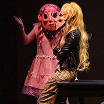

Photo courtesy of Frost Opera Theater, University of Miami, Jeffrey Buchman, Stage Director, Alan Johnson, Program/Music DirectorFrost Opera Theater: A Hand of Bridge by Samuel Barber

Frost Opera Theater: Scrapbookers by Leanna KirchoffFrost Opera Theater: Scrapbookers by Leanna KirchoffPhoto courtesy of Indiehouse FilmsPhoto courtesy of Grace Finke